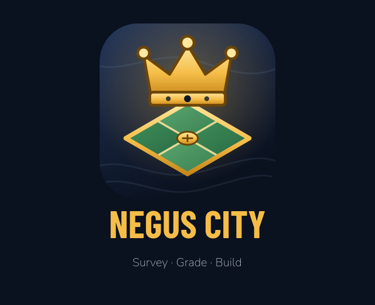

Your browser does not support the canvas tag.
Your browser does not support JavaScript.

Loading Negus City…
0%
Couldn't load — check your connection and tap to retry
Update ready — tap to reload
Tap Share → Add to Home Screen to play full-screen
✕